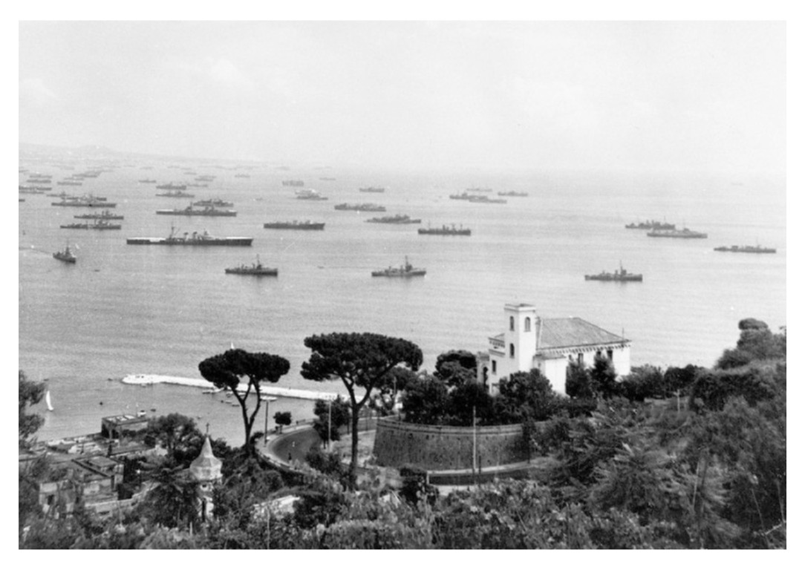

15 août 1944
Provence, littoral méditerranéen (Cavalaire, Saint-Tropez, Sainte-Maxime, Le Lavandou)
Alliés : États-Unis, France libre (Armée B du général de Lattre), Royaume-Uni
Axe : Allemagne nazie (19e armée)
Opération Dragoon est le débarquement allié en Provence, destiné à ouvrir un second front en France après le succès d’Overlord en Normandie. L’objectif est de libérer le Sud, de sécuriser les ports méditerranéens et de remonter vers la vallée du Rhône.
À l’aube du 15 août 1944, les troupes américaines et françaises débarquent sur les plages provençales. Soutenues par une puissante flotte et des opérations aéroportées, elles progressent rapidement. Les villes côtières tombent en quelques heures, ouvrant la route vers Toulon et Marseille.
Victoire alliée rapide : Toulon et Marseille sont libérées en moins de deux semaines. Les ports méditerranéens deviennent essentiels pour l’approvisionnement des forces alliées.
Dragoon accélère la libération de la France, affaiblit la Wehrmacht sur le front occidental et permet la jonction avec les forces venues de Normandie. Une opération décisive mais souvent moins médiatisée que Overlord.